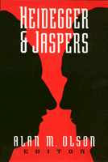

<body bgcolor="#FFFFFF" text="#000000" link="#0000FF" vlink="#CC0000" alink="#CC0000"><center><hr width="350" size="1" align="center" noshade>Essays explore the relationship between two modern German philosophers<hr width="350" size="1" align="center" noshade><p><a href="https://cdcshoppingcart.uchicago.edu/Cart/ChicagoBook.aspx?ISBN=9781566391146&&PRESS=temple" target="_top">Buy this book!</a> | <a href="https://cdcshoppingcart.uchicago.edu/Cart/Cart.aspx?PRESS=temple" target="_top">View Cart</a> | <a href="https://cdcshoppingcart.uchicago.edu/Cart/Cart.aspx?PRESS=temple" target="_top">Check Out</a></p><p></p></center><!--none//--><h1>Heidegger and Jaspers</h1>
<h3>edited by Alan M. Olson</h3>
<P>cloth 1-56639-114-8 $54.95, Dec 93, <FONT COLOR=#990033>Out of Print</FONT>
<br>paper 1-56639-115-6 $24.95, Dec 93, <FONT COLOR=#990033>Out of Stock Unavailable</FONT>
<BR> 192 pp
6x9
</P><p>The friendship between Martin Heidegger and Karl Jaspers developed after World War I but became strained over the intrusion of Nazism into intellectual life. These essays provide insight into the cultural, religious, and political crises facing the two philosophers and elucidate the perennial question about the moral responsibility of intellectuals. Of particular interest is an essay by Paul Tillich, published here for the first time.
<BR>&nbsp;<h2>Excerpt</h2><P>Excerpt available at <a href="http://www.temple.edu/tempress">www.temple.edu/tempress</a></p>
<BR>&nbsp;<h2>Contents</h2><P>
<p>Acknowledgments
<br>Introduction: A Dialectic of Being and Value &#150 Alan M. Olson
<br>1. Heidegger and Jaspers &#150 Paul Tillich
<br>2. Heidegger's Philosophy of Being from the Perspective of His Rectorate &#150 Leonard H. Ehrlich
<br>3. Shame, Guilt, Responsibility &#150 Karsten Harries
<br>4. The Psychological Dimension in Jasper's Relationship with Heidegger &#150 Harold H. Oliver
<br>5. On the Responsibility of Intellectuals &#150 Joseph Margolis
<br>6. Jaspers and Heidegger: Philosophy and Politics &#150 Tom Rockmore
<br>7. Heidegger and Jaspers on Plato's Idea of the Good &#150 Klaus Brinkmann
<br>8. The Space of Transcendence in Jaspers and Heidegger &#150 Stephen A. Erickson
<br>9. The Concept of Freedom in Jaspers and Heidegger &#150 Krystyna Gorniak-Kocikowska
<br>10. Heidegger's Debt to Jaspers's Concept of the Limit-Situation &#150 William D. Blattner
<br>Recent Publications on Heidegger
<br>About the Contributors
<br>Index
</P><BR>&nbsp;<H2>About the Author(s)</H2>
<P><b>Alan M. Olson</b> is Professor of Religion and Associate Professor of Philosophy at Boston University.</P>
<P>Contributors: William D. Blattner, Klaus Brinkmann, Leonard H. Ehrlich, Stephen A. Erickson, Krystyna Gorniak-Kocikowska, Karsten Harries, Joshph Margolis, Harold H. Oliver, Tom Rockmore, Paul Tillich, and the editor.</P>
<BR><H2>Subject Categories</H2>
<p><A HREF="/tempress/philosophy.html" TARGET="_top">Philosophy and Ethics</a>
</p>
<p align="center"><a href="https://cdcshoppingcart.uchicago.edu/Cart/ChicagoBook.aspx?ISBN=9781566391146&&PRESS=temple" target="_top">Buy this book!</a> | <a href="https://cdcshoppingcart.uchicago.edu/Cart/Cart.aspx?PRESS=temple" target="_top">View Cart</a> | <a href="https://cdcshoppingcart.uchicago.edu/Cart/Cart.aspx?PRESS=temple" target="_top">Check Out</a></p><p><font face="Arial" size="1"><a href="copyright.html" onMouseOver="window.status='Web Copyright Policy';return true;" onMouseOut="window.status=''" title="Web Copyright Policy">&copy;</a> 2015 <a href="http://www.temple.edu" target="new" onMouseOver="window.status='Link to Temple University home page';return true;" onMouseOut="window.status=''" title="Link to Temple University home page">Temple University</a>. All Rights Reserved. http://www.temple.edu/tempress/titles/1019_reg.html</font></p>